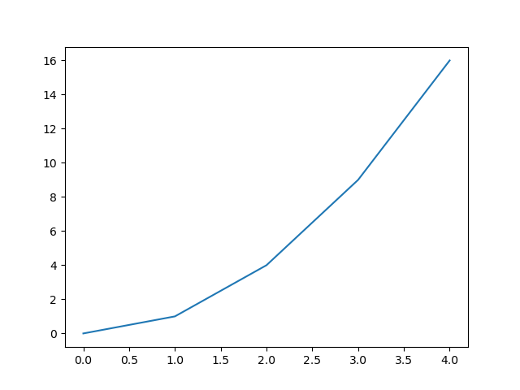
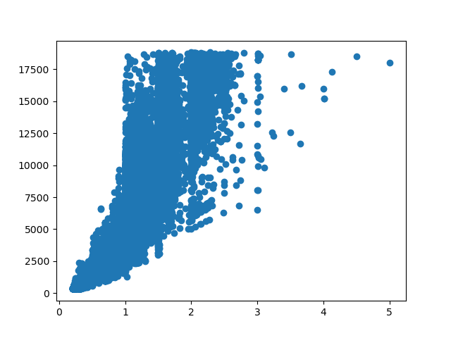

matplotlib
Learning outcomes
At the end of this sessions, learners …
have practiced using the documentation of favorite HPC cluster
understand what
matplotlibisunderstand why
matplotlibis importanthave run Python code that uses
matplotlibhave created a plot with
matplotlib(optional) have created a plot with
matplotlibfrom apandastable
For teachers
Prior:
What is a plotting library?
What is matplotlib?
matplotlib allows you to create figures:
import matplotlib.pyplot as plt
plt.plot([0, 1, 4, 9, 16])
plt.show()
Which shows:

Why matplotlib is important
matplotlib is one of the most popular Python plotting libraries.
It can be used to create publication-quality figures and
the matplotlib plot types overview
shows that most plot types are present.
How popular is matplotlib?
matplotlib is not popular enough to be in
the PyPI top 20.
However, at
the matplotlib PyPI statistics page
we see that it has around 200 million downloads per month.
As the number 20 package has around 800 million downloads per month,
we can infer that it is not all too unpopular.
Exercises
Want to see the answers as a video?
HPC cluster |
YouTube video |
|---|---|
Alvis |
|
COSMOS |
|
Dardel |
|
Kebnekaise |
|
Pelle |
|
Tetralith |
Exercise 1: minimal code
Go to the documentation of the HPC cluster you work on.
Answer: where is your documentation?
Sorted by HPC cluster:
HPC center |
HPC cluster |
HPC cluster-specific documentation |
|---|---|---|
C3SE |
Alvis |
|
UPPMAX |
Bianca |
|
LUNARC |
COSMOS |
|
PDC |
Dardel |
|
HPC2N |
Kebnekaise |
|
UPPMAX |
Pelle |
|
NSC |
Tetralith |
In that documentation, find the software module to load
the matplotlib Python package.
Answer: where is the matplotlib documentation?
HPC cluster |
HPC cluster-specific |
|---|---|
Alvis |
Has no documentation on how to load |
Bianca |
|
COSMOS |
Has no documentation on how to load |
Dardel |
Has no documentation on how to load |
Kebnekaise |
|
Pelle |
|
Tetralith |
In a terminal (on your HPC cluster), load the software module to use matplotlib
Answer: how to load the matplotlib software module
HPC cluster |
How to load Matplotlib |
|---|---|
Alvis |
|
COSMOS |
|
Dardel |
|
Kebnekaise |
|
Pelle |
|
Tetralith |
|
On your HPC cluster, create a script called matplotlib_exercise_1.py
with the following code:
import matplotlib
print(matplotlib.__version__)
Run matplotlib_exercise_1.py.
Answer: how to run the script
HPC cluster |
How to run the script |
|---|---|
Alvis |
|
COSMOS |
|
Dardel |
|
Kebnekaise |
|
Pelle |
|
Tetralith |
|
What do you see?
Answer: how does that look like?
The output looks similar to this:
3.6.3
Even though the code shows nothing directly useful, why is this a useful exercise anyways?
Answer
This is a useful exercise,
because it proves that you have successfully loaded/installed
matplotlib.
Exercise 2: a minimal plot
On your HPC cluster, create a script called matplotlib_exercise_2.py
with the following code:
import matplotlib.pyplot as plt
plt.plot([0, 1, 4, 9, 16])
plt.savefig("matplotlib_exercise_2.png")
Run matplotlib_exercise_2.py.
Answer: how to run the script
HPC cluster |
How to run the script |
|---|---|
Alvis |
|
COSMOS |
|
Dardel |
|
Kebnekaise |
|
Pelle |
|
Tetralith |
|
Check that the figure is created
Answer: how to check that the figure is created
There are many ways.
To check if the file is created:
Use
lsto view the list of filesUse a file explorer
For this exercise, this is good enough.
Optionally, if you want to actually see the file, then read the HPC Python course Day 1 ‘Working with graphics’ session.
(optional) Exercise 3: displaying a pandas table
In this exercise, we will again use the ‘diamonds’ dataset (as a comma-separated file): a dataset about diamonds.
This dataset contains information about more than fifty thousand diamonds. Two such features are the weight (in carats) and the price (in USD). Here we want to use an image to display the relationship between these two.
Create a script called matplotlib_exercise_3.py. In that script:
use
pandasto read the dataset (as done in thepandassession)use
matplotlibto create a scatter plot from that data: Put the diamond weight on the x-axis and the diamond price on the y-axis. Use thematplotlibdocumentation, a search engine or an AI chatbot for the answer.save the plot as
matplotlib_exercise_3.pngUse thematplotlibdocumentation, a search engine or an AI chatbot for the answer.
Answer
Here is a simple solution (simplified from this script):
import pandas as pd
import matplotlib.pyplot as plt
table = pd.read_csv("diamonds.csv")
plt.scatter(table["carat"], table["price"])
plt.savefig("matplotlib_exercise.png")
This will look like this:

(optional) Exercise 4: making the plot pretty
Use the matplotlib documentation
to improve the plot, for example:
Add a title
Add titles to the axes
Add a linear trendline
Whatever you like
(optional) Exercise 5: should I use matplotlib or seaborn?
Search the academic literature to answer the question
if you should use matplotlib or seaborn,
for example
by searching Google Scholar for ‘matplotlib versus seaborn’.
Which paper will you find?
Answer
You will find the paper [Sial et al., 2021]
(see below for the complete reference)
What does the paper conclude, regarding using matplotlib or seaborn?
Answer
Here is a quote from the conclusion of [Sial et al., 2021]:
It has been identified that if a data scientist wants to visualize the large chunks of datasets then seaborn will be a better option, but if you are looking for basic visualization patterns then matplotlib would be a better choice for beginners and starters in the field of data visualization & computational modelling
Done?
External links
References
[Sial et al., 2021]Sial, Ali Hassan, Syed Yahya Shah Rashdi, and Abdul Hafeez Khan. “Comparative analysis of data visualization libraries Matplotlib and Seaborn in Python.” International Journal 10.1 (2021): 277-281.